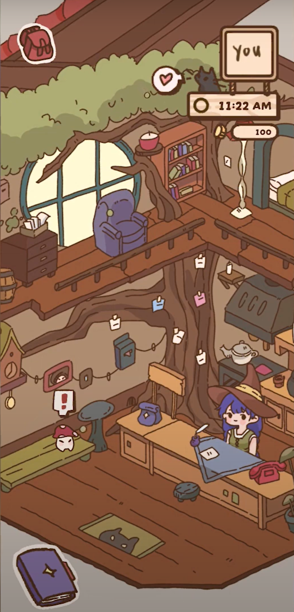
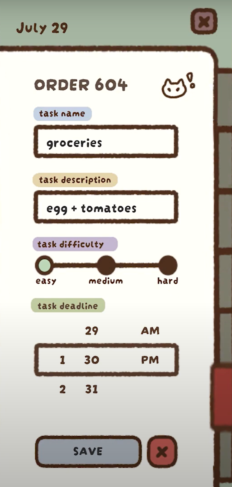
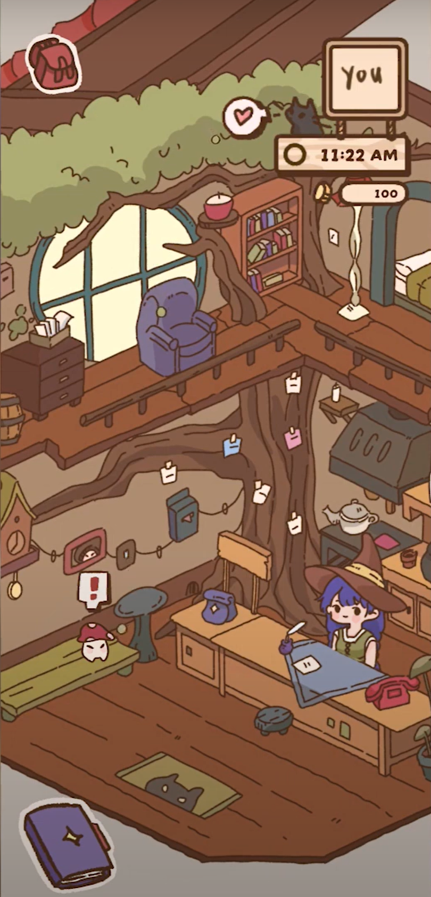
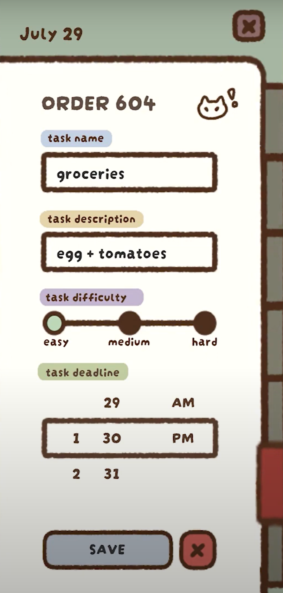
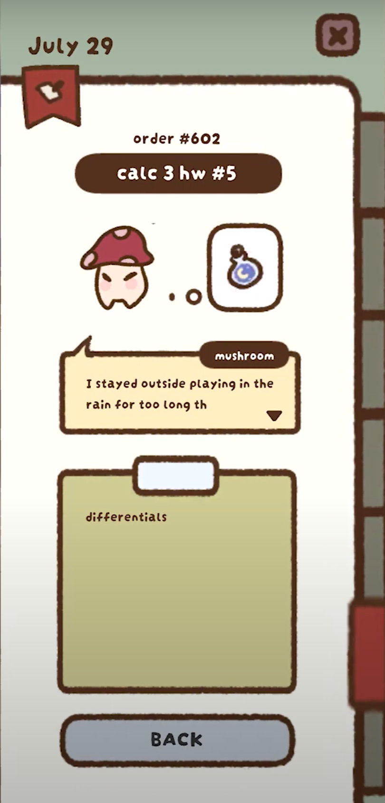
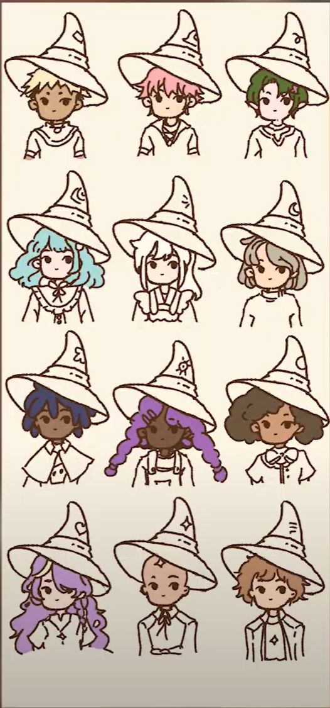
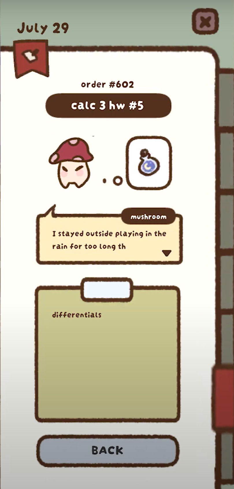
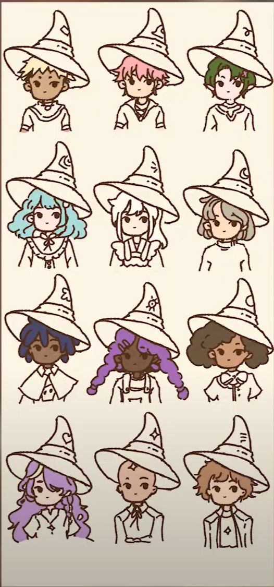

Purpose:
Witch Task is a productivity tool for teens and young adults that provides a gamified systematic approach to task management, helping in time management, organization, and prioritization. This app aims to help individuals stay on top of their responsibilities in both their personal and work lives through immersive storytelling. This is built as a mobile app using Unity/C# with support for both iOS and Android.
Description:
Users play as a witch who just started a potion shop, in a whimsical small town inhabited by mushroom villagers who are in need of potions daily, for their everyday needs. These potion orders then correspond to the user’s daily tasks that they input every morning. For example, if a user records that they need to do their “programming hw”, a mushroom villager will come in during the day requesting an “order” for “programming-hw potion”.
Every Monday, when the user opens the app for the first time, the weekly tasks screen will open so users are able to plan their week ahead of time. Respectively, every other day when they first launch the app, the corresponding day’s tasks screen will open.
When a user wants to add a new task, they can click the new order button located at the top, which will then have the user record their task which includes the task name, description, difficulty, and deadline. Then by using a personalized algorithm that we are currently developing, tasks will be released in the form of “orders” by different mushroom villagers.
These mushroom villagers will then come into the shop during different times of the day(with a max being two mushrooms at a time), asking the player(the witch) to work on their orders. Once the player completes their task in real life, the player can complete the order in-app, and receive coins from the villager mushroom. The user can then use these coins to unlock more shop features and customizations.
What I Worked On:
- illustrating and animating assets (lineart only)
- UI/UX design in Figma
- programming task management
- implementing priority queues
- building website in React (still in progress)
Future Plans:
- Pomodoro timer once tasks start
- Character customization
- Character Animation
- Three different shops the player can purchase items from
- Potion shop enhancements and ranking
- Overarching village storyline
- Personalized quiz to figure out custom task management method
- Shop familiars that guide the user
 



 


